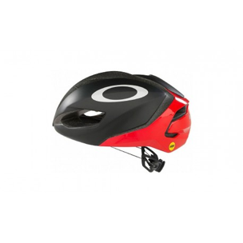
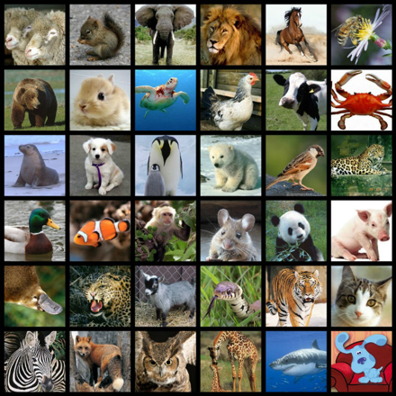

Proyecto: Project Florence
El proyecto Florencia es una representación artística de una experiencia de interfaz planta-humana que se basa en un análisis científico de la planta y su entorno. Junto con la capacidad de recibir aportes humanos, la planta puede devolver una respuesta, promoviendo así una experiencia de conversación bidireccional
Idea de Proyecto
Se tiene pensado que a través un software parecido a el de la plantas se pueda construir un casco que pueda hacer algo similar, pero con los animales
Funcionamiento
El proyecto funciona similar al que se investigo, solo que se tendrá un pequeño cambio en ves de como se uso con las plantas que trataba de como reaccionaba a partir de luz, en este caso que sea a partir de ondas electromagnéticas y este detectara el estimulo que tenga el animal.
Ventajas
Esto permitirá a que la gente tenga un mejor cuidado con los animalesQue se pueda satisfacer las necesidades que tenga el animal.Para el caso de las veterinarias esto les será de gran ayuda para el tratado de las mascotas
Aplicación
¿A quién esta dirigido?
Esta aplicación esta a dirigida a las esas personas que desean consumir un alimento con el precio que sea asignado dentro de la aplicación, sin tener que moverse demasiado del lugar en el que se encuentren.
¿Qué necesidades satisface?
Optimizando el tiempo que tarda el usuario en buscar y ubicar un sitio exacto, con los gustos y necesidades para consumir un alimento.
¿Como Funciona?
El usuario tendrá que tener seleccionada la opción de información de ubicación de su teléfono móvil. Posteriormente el usuario deberá ingresar la información básica que le pida la aplicación, como la cantidad de dinero, el tipo de comida que desea consumir, entre otros. A partir de ello, se desplegará una ventana donde aparecerán todos los establecimientos comerciales que se encuentran a su alrededor con la condición de que las que se adapten tendrán algo que las distinga. Cuando el usuario seleccione el establecimiento que desea saldrá el nombre, la dirección y una foto del lugar.